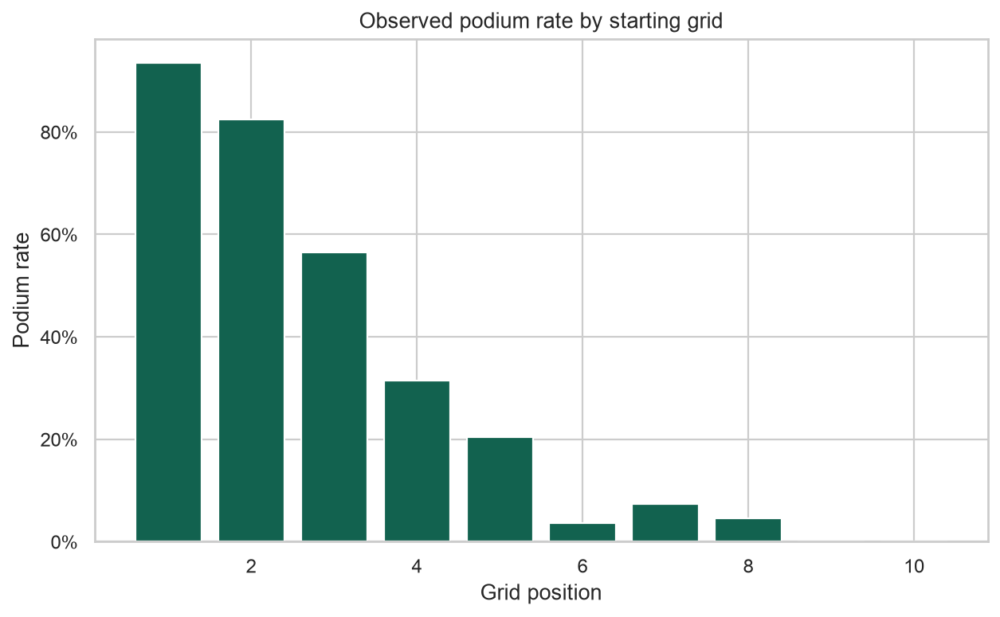

1,080
driver-race rowsSix joined tables cover 108 races with key integrity checks.
A relational race model transforms grid, circuit, driver, constructor, and reliability history into calibrated podium probabilities.
Six joined tables cover 108 races with key integrity checks.
The selected gradient model is evaluated with a chronological 2024 holdout.
Probability quality is compared against a grid-position baseline.
Six source tables → relational joins → shifted driver/constructor form → gradient model → podium ranking API.
Finding: the model beat the grid baseline (88.33% accuracy), while treating each driver probability independently — a documented modeling trade-off.
